Lógica de Programação
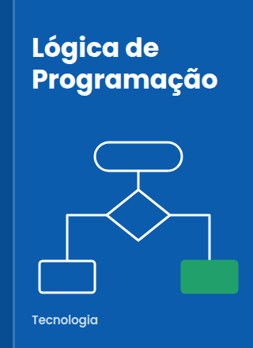
Tecnologia
Algoritmos e estruturas de decisão e repetição explicados passo a passo, com exercícios resolvidos.
Saiba maisLivros, artigos e materiais de apoio do seu curso reunidos em um só lugar, disponíveis a qualquer hora.
Ver livros em destaqueA Biblioteca Digital UniFECAF foi criada para que o estudante encontre, em poucos cliques, os livros e materiais indicados pelos professores. O acervo reúne títulos de todos os cursos, organizados por categoria, e pode ser consultado no computador ou no celular.
Além da leitura on-line, a biblioteca oferece espaços de estudo, empréstimo de livros impressos e uma equipe que orienta trabalhos acadêmicos, da busca por fontes confiáveis à formatação nas normas ABNT.
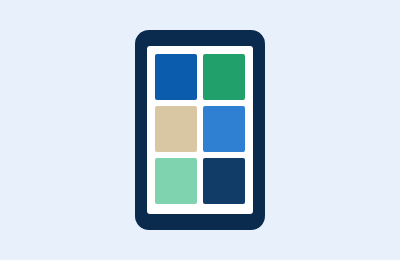
E-books, artigos e apostilas para ler no navegador, a qualquer hora.
Retire livros impressos nas unidades e renove o prazo pelo site.
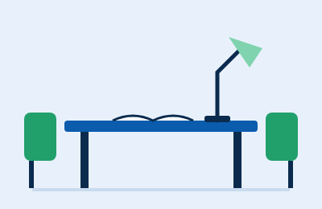
Mesas coletivas e cabines individuais para estudar com tranquilidade.
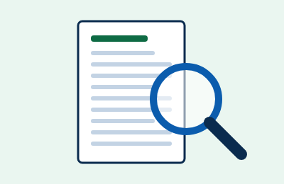
Ajuda para encontrar fontes e formatar trabalhos nas normas ABNT.
Leia no celular, no computador ou na biblioteca: o acervo acompanha você.
Destaques do acervo neste semestre, separados por categoria.

Tecnologia
Algoritmos e estruturas de decisão e repetição explicados passo a passo, com exercícios resolvidos.
Saiba mais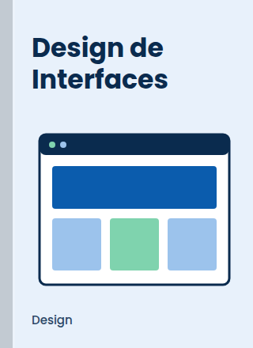
Design
Princípios de layout, cor, tipografia e usabilidade para criar telas claras e acessíveis.
Saiba mais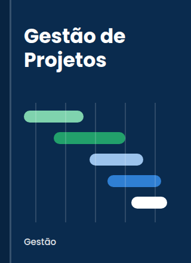
Gestão
Planejamento, cronograma e controle de riscos com exemplos do dia a dia das empresas.
Saiba mais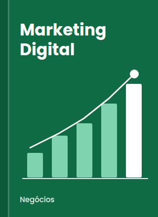
Negócios
Como atrair e manter clientes usando redes sociais, conteúdo e análise de dados.
Saiba mais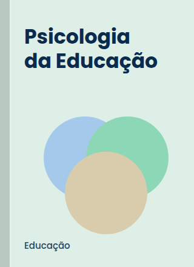
Educação
Como as pessoas aprendem e o que isso muda na prática da sala de aula.
Saiba mais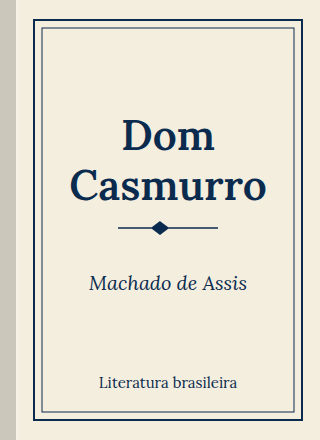
Literatura
O clássico de Machado de Assis: Bentinho, Capitu e uma dúvida que atravessa gerações.
Saiba mais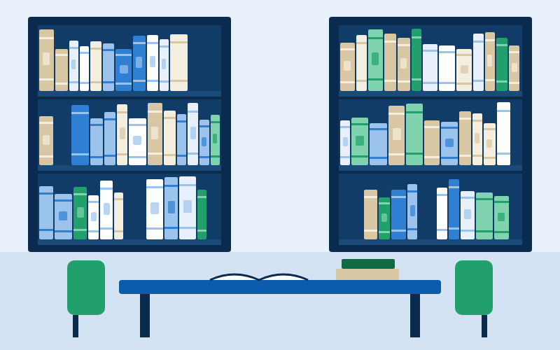
Abriga o acervo impresso, o balcão de empréstimos e mesas para estudo em grupo. Computadores com acesso às bases de pesquisa ficam disponíveis durante todo o horário de atendimento.
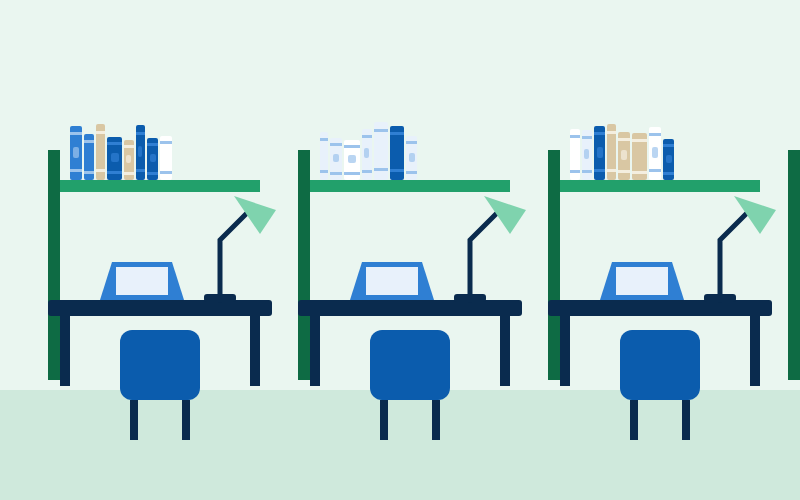
Ambiente silencioso com cabines individuais, luz de leitura e tomadas em todas as mesas. Ideal para revisar o conteúdo antes das provas.
A unidade que cabe no bolso: e-books, artigos e materiais complementares disponíveis 24 horas por dia, em qualquer dispositivo com internet.
Quer reservar um livro, tirar dúvidas sobre o acesso ou pedir ajuda com um trabalho? Fale com a equipe da biblioteca pelos canais abaixo.
E-mail: biblioteca@exemplo.edu.br
Telefone: (11) 0000-0000
Atendimento: segunda a sexta, das 8h às 22h; sábado, das 8h às 14h.